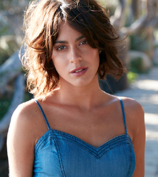

Equipo

Josefina Marco
Manager

Jorge Amato
Presidente Sony Music

Mauricio Rengifo
Co-Productor

Andres Torres
Co-Productorr
Martina Stoessel, o más bien conocida como TINI, es la artista argentina más conocida en los últimos
tiempos, se mantiene como la cantante/actriz de mayor éxito a nivel internacional. La gran artista
nacida el 21 de marzo de 1997 en Buenos Aires, Argentina, hija de Alejandro Stoessel -famoso
productor televisivo- y de Mariana Muzlera, ha solidificado una carrera artística desde la edad de
10 años, y se ha mantenido hasta la actualidad como un fenómeno mundial posicionando sus canciones
en los primeros puestos de los listados musicales, habiendo pasado en primer lugar por su carrera
como actriz.
Su primera participación en televisión fue en 2007 con un papel menor en la telenovela argentina
Patito feo. Más tarde en 2011, fue la encargada de ponerle voz a la versión en español del tema «Tu
resplandor», que en inglés lo interpreta la cantante Shannon Saunders. El tema forma parte del álbum
Disney Princess: Fairy Tale Songs.
En 2011, fue elegida por los productores de Disney para protagonizar la serie de Disney Channel
"Violetta", una coproducción de Latinoamérica, Europa, Medio Oriente y África, donde interpreta al
personaje principal, Violetta Castillo. Le dió vida al tema musical de la serie, «En mi mundo», para
las versiones en español italiano e ingles, y de esta manera prestó su voz a algunas canciones de
los álbumes de la serie.
Sus más recientes éxitos como cantante, “Miénteme” con María Becerra, “Un beso en Madrid” con
Alejandro Sanz, y “Ella dice” con KHEA han demostrado la versatilidad musical de la artista.
El fenómeno adolescente mundial Tini (Martina) Stoessel es una actriz, cantante, bailarina y modelo
argentina contratada por Hollywood Records (2016-2020), Universal Music Latin Entertainment
(2016-2020) y Sony Music Entertainment (desde 2021). A los catorce años descubrieron su talento en
un casting abierto. El programa de televisión de Tini se estrenó en 130 países y tiene 1.400
millones de visualizaciones en YouTube. También se ha presentado en vivo frente a más de dos
millones de seguidores en todo el mundo. Protagonizó su primera película en “Tini: El Gran Cambio de
Violetta” el año 2016.
Tini acumula más de 15 millones de seguidores en todas sus redes sociales y plataformas digitales.
“Bueno… no sé cómo explicarlo. La música es una vía de escape para mí. Cuando escucho música me
siento libre, segura y feliz. Es la forma en que me expreso.", declara Martina, quien ha recibido
reconocimientos internacionales por su música y actuación.
Desde que firmó con Hollywood Records y lanzó su álbum debut homónimo en 2016, TINI se ha convertido en un fenómeno global, con un seguimiento social de más de 34 millones y más de 4 mil millones de transmisiones combinadas de audio y video. En 2020, TINI fue Artista del año de Billboard Argentina y la artista femenina argentina número 1 en Spotify. TINI realizó una gira por Europa y América Latina en su gira Quiero Volver como cabeza de cartel en 2019/2020, incluidos nueve espectáculos con entradas agotadas en el Luna Park en Buenos Aires. TINI también co-entrenó con Alejandro Sanz en la temporada 2020 de La Voz (La Voz) España. El álbum más reciente de TINI fue TINI TINI TINI; ella coescribió todas las canciones con el apoyo de los reconocidos productores y compositores Andrés Torres y Mauricio Rengifo, quienes fueron galardonados como Productor del Año en los Latin GRAMMYs® 2020. TINI ha grabado con grandes como Alejandro Sanz, Sebastián Yatra, Karol G, Cali y El Dandee, Alesso, Morat, R3HAB, Greeicy, Lalo Ebratt, María Becerra, Álvaro Soler, Jonas Blue, Reik, Aitana, Ana Guerra, Mau & Ricky, Ovy a la batería, KHEA y Nacho.

Con respecto a su papel protagonico en Violetta ganó un premio a la Actriz revelación en la edición de
2012 de los Kids' Choice Awards Argentina y el Martin fierro a la actriz revelación.
Desde entonces ha tenido mucho éxito. Ganó dos premios Kids’ Choice Awards por “Actriz revelación” en
Argentina y Colombia.
Nominada a 40 premios distintos, entre los cuales figuran Kids Choice Awards Argentina (3), E! Awards,
Kids Choice Awards, Premios Martín Fierro, Premios Carlos Gardel (2), Los más clickeados (3), Kids'
Choice Awards Colombia, Kids Choice Awards México (2), World Music Awards, Bravo Otto (4), MTV Europe
Music Awards (4), Premios Quiero (5), Premios Heat Latin Music Awards (2), Premios Martín Fierro
Digital, Premios Cheers, Flor de mujer, MTV Millennial Awards (2), Premios Martín Fierro de la Moda,
Premios Juventud, Premios Lo Nuestro y Breaktudo Awards (2), y ganadora de 22 como Actriz Revelación,
Mejor álbum de banda sonora por película o televisión, Famosa con más rating del año, Actriz de TV
favorita, Super-TV-Star female, Super-female-singer, Mejor músico instagramer, Super-TV-Star female,
Mejor canal de YouTube, Mejor artista musical, Responsabilidad Social Empresarial, Cumbre de Mujeres
Solidarias, Artista + flama Argentina, Mejor video coreográfico, Mejor video melódico, Mejor video del
año, Mejor encuentro extraordinario, Mejor video pop, Artista latina, la hacen sin dudas unaverdadera
artista.
Manager
Presidente Sony Music
Co-Productor
Co-Productorr